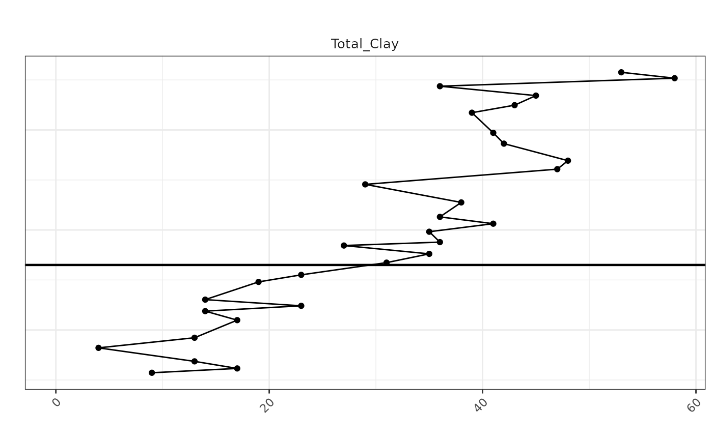
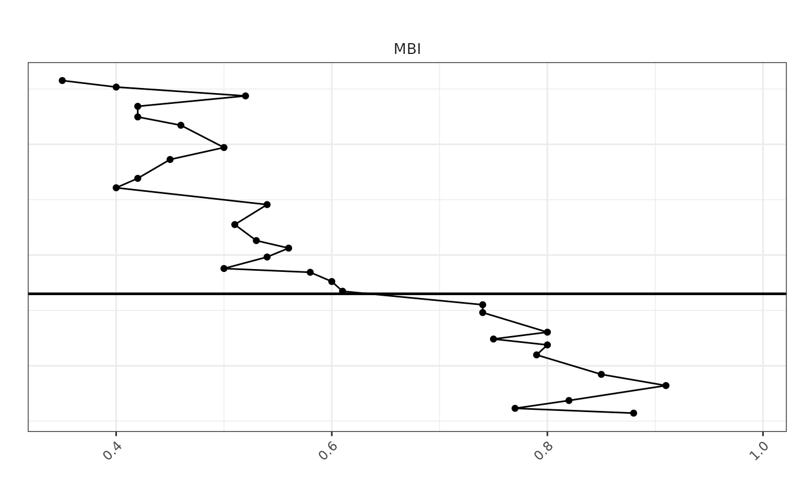
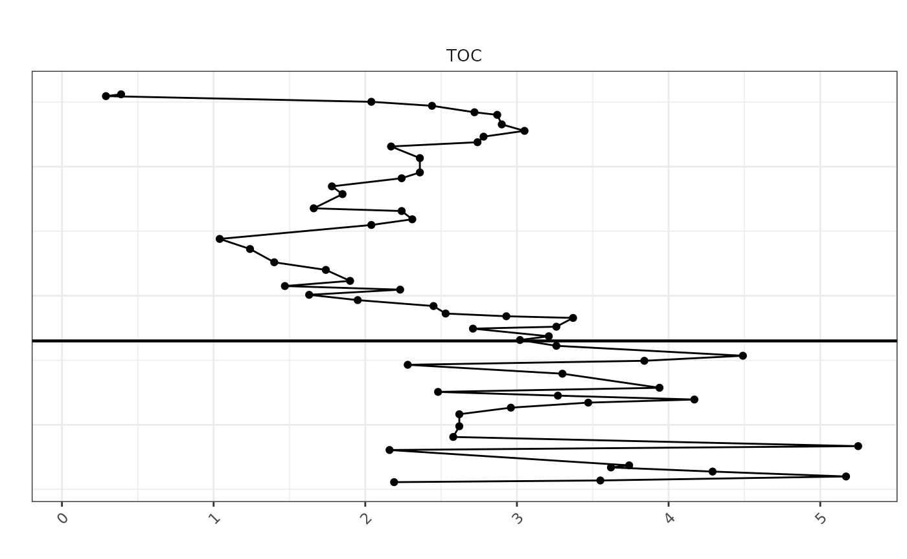
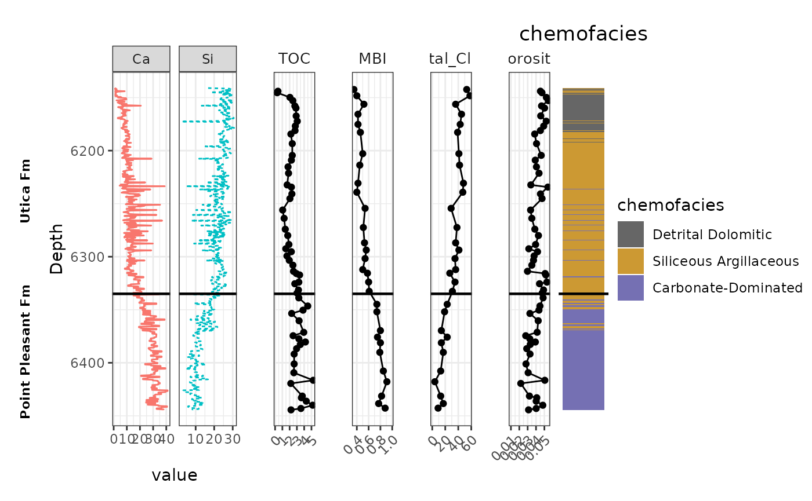

Methods
High‐resolution HHXRF measurements provide a dense, quasi‐continuous elemental profile downcore and therefore were used as the vertical reference grid for multivariate analysis and chemofacies definition. Sparse plug‐based measurements (e.g., TOC and total porosity) and XRD‐derived mineralogy/indices (e.g., total clay and MBI) were depth-aligned to the HHXRF grid by interpolating each variable to the nearest HHXRF depth increments using a one-dimensional linear interpolation routine (spaAlign; spa_align). All input datasets were first standardized to a common depth column name (“Depth”), sorted by depth, and screened for non-data columns (e.g., Formation). For each property dataset, values were interpolated to the HHXRF depths using rule-based behavior that restricts interpolation to the supported depth interval (no extrapolation beyond the available plug/XRD depth range under rule = 1). The resulting aligned dataset preserves the stratigraphic order of observations and enables direct, depth-consistent comparison of elemental geochemistry, chemofacies assignments, and reservoir-quality properties along the core.
Justification
This approach is geologically appropriate because stratigraphic interpretation and reservoir-quality characterization require that all measurements be referenced to a consistent vertical framework. HHXRF data are collected at much higher sampling density than plug measurements and capture fine-scale centimeter- to decimeter-scale variability, making them the most suitable dataset to define continuous downcore boundaries and chemofacies. In contrast, plug-based TOC, porosity, and XRD measurements are sparse and discontinuous; comparing them directly to HHXRF-derived chemofacies without alignment would introduce artificial offsets and could misassign properties to the wrong stratigraphic interval. By interpolating sparse properties onto the HHXRF depth grid, each property value is evaluated within the same stratigraphic ordering used to define chemofacies, improving internal consistency and interpretability. Importantly, values that occur outside the HHXRF depth coverage (or outside the supported range of the plug/XRD data when extrapolation is disabled) cannot be assigned to a chemofacies without introducing unsupported assumptions; therefore, such points are treated separately and excluded from chemofacies-based statistics. Overall, aligning all properties to a common HHXRF depth framework minimizes depth mismatch, preserves geological ordering, and provides the most defensible basis for describing chemofacies in terms of reservoir-quality attributes.
Short “how it was done”
Standardized depth column name to Depth across XRF, TOC, porosity, and XRD tables.
Sorted each dataset by depth and removed non-numeric/non-required fields (e.g., Formation).
Used HHXRF depth vector as the target/ref grid.
Interpolated TOC, porosity, and XRD-derived variables to each HHXRF depth using linear interpolation (spa_align).
Used rule = 1 to avoid extrapolating beyond available measured intervals (prevents inventing values outside the data support).
Generated an aligned dataset where each HHXRF depth has associated reservoir-quality variables when supported by the plug/XRD depth coverage.
Because chemofacies are defined only on the HHXRF reference depths, plug measurements outside the HHXRF depth coverage cannot be assigned a chemofacies label and are excluded from chemofacies-based summaries to avoid unsupported stratigraphic extrapolation.
Setup: load packages used across the workflow
Purpose: - read input datasets (XRF, XRD, TOC, Porosity) - compute derived metrics (MBI) - align sparse plug data to continuous XRF depth using spaAlign - generate multi-track depth plots + boxplots by chemofacies
Load the required libraries
# Load the required libraries
library(plyr)
library(spaAlign)
library(stringr)
library(reshape2)
library(ggplot2)
library(patchwork)
library(dplyr)##
## Attaching package: 'dplyr'## The following objects are masked from 'package:plyr':
##
## arrange, count, desc, failwith, id, mutate, rename, summarise,
## summarize## The following objects are masked from 'package:stats':
##
## filter, lag## The following objects are masked from 'package:base':
##
## intersect, setdiff, setequal, unionIncrease printing precision (useful for QC on depth alignment
getOption("digits")## [1] 7
options(digits=15)Portage ( here, we are using the Tracker core ,Portage County; API 34133244490000 as case study)
Load + filter XRF, then split into Utica vs Point Pleasant
Data <- read_csv("/mnt/vstor/CSE_MSE_RXF131/staging/sdle/geospatial/core_xrf_xrd/XRF_two_core_in1/chaper_3/Potage3rd.csv")## New names:
## Rows: 690 Columns: 48
## ── Column specification
## ──────────────────────────────────────────────────────── Delimiter: "," chr
## (2): Formation, Core dbl (46): Depth_ft...1, Al_wt%, Si_wt%, K_wt%, Ti_wt%,
## Fe_wt%, S_wt%, Mg_wt%...
## ℹ Use `spec()` to retrieve the full column specification for this data. ℹ
## Specify the column types or set `show_col_types = FALSE` to quiet this message.
## • `Depth_ft` -> `Depth_ft...1`
## • `Depth_ft` -> `Depth_ft...45`
# Standardize depth column name for downstream consistency
Data <- Data %>%
rename(Depth = `Depth_ft...1`)
# Keep only columns required for plotting/alignment (remove precomputed ratios, identifiers, and any duplicated depth column)
Data_filtered <- dplyr::select(Data,
-Chemofacies,
-`Depth_ft...45`,
-`K/Al`,
-`Zn/Al`,
-`Si/Ca`,
-SGR,
-`Sr/Ca`,
-`V/Al`,
-`Mg/Al`,
-`Rb/Al`,
-`Si/Al`,
-`Ti/Al`,
-`Zr/Al`,
-`Si/Ti`,
-`Cu/Al`,
-`Fe/Al`,
-`Ni/Al`,
-`Mo/Al`,
-`S/Al`,
-`U/Al`,
-`Al_ppm`,
-`Core`
)
# Keep only Utica (U...) and Point Pleasant (P...) intervals
Data_filtered2 <- Data_filtered %>%
filter(str_starts(Formation, "U") | str_starts(Formation, "P"))
Data_filtered2## # A tibble: 631 × 26
## Depth `Al_wt%` `Si_wt%` `K_wt%` `Ti_wt%` `Fe_wt%` `S_wt%` `Mg_wt%` `Ca_wt%`
## <dbl> <dbl> <dbl> <dbl> <dbl> <dbl> <dbl> <dbl> <dbl>
## 1 6141 4.9 16.7 2.22 0.001 4.97 1.78 0.3 1.99
## 2 6142. 7.98 28.2 2.83 0.001 5.32 2.39 1.3 0.95
## 3 6142 7.4 28.8 2.69 0.57 5.02 2.65 1.12 2.26
## 4 6143. 8.3 29.3 2.7 0.57 5.58 3.03 1.72 1.29
## 5 6143 5.15 26.2 1.7 0.001 4.71 1.89 0.9 2.31
## 6 6144. 7.49 28.6 2.69 0.001 5.08 2.21 1.38 1.31
## 7 6144 7.02 24.3 2.39 0.49 4.17 1.82 1.2 8.4
## 8 6145. 7.53 27.3 2.68 0.001 4.87 2.46 1.24 1.16
## 9 6145 5.28 18.1 2.3 0.001 4.66 1.97 0.3 2.16
## 10 6146. 8.24 28.2 2.99 0.64 5.05 2.29 1.19 1.74
## # ℹ 621 more rows
## # ℹ 17 more variables: `Sr_wt%` <dbl>, `P_wt%` <dbl>, Mo_ppm <dbl>,
## # V_ppm <dbl>, U_ppm <dbl>, Ni_ppm <dbl>, Cu_ppm <dbl>, Zn_ppm <dbl>,
## # Th_ppm <dbl>, Rb_ppm <dbl>, Zr_ppm <dbl>, Pb_ppm <dbl>, Formation <chr>,
## # chemofacies <dbl>, Factor1 <dbl>, Factor2 <dbl>, Factor3 <dbl>Split XRF into two interval-specific datasets and write to CSV
These are used as inputs to spa_align()
library(dplyr)
library(stringr)
# Rows where Formation starts with "U" Utica
Data_U <- Data_filtered2 %>%
filter(str_starts(Formation, "U"))
write.csv(Data_U, "Potage_xrf_Utica.csv", row.names = FALSE)
# Rows where Formation starts with "P" Point Pleasant
Data_P <- Data_filtered2 %>%
filter(str_starts(Formation, "P"))
write.csv(Data_P, "Potage_xrf_PP.csv", row.names = FALSE)Read xrd file and calculate MBI from xrd
XRD_Portage <- read_csv("/mnt/vstor/CSE_MSE_RXF131/staging/sdle/geospatial/core_xrf_xrd/XRF_two_core_in1/chaper_3/XRD_Portage.csv")## Rows: 32 Columns: 13
## ── Column specification ────────────────────────────────────────────────────────
## Delimiter: ","
## chr (1): Formation
## dbl (12): Depth_ft, Quartz, Plagioclase, K-Feldspar, Calcite, Siderite, Anke...
##
## ℹ Use `spec()` to retrieve the full column specification for this data.
## ℹ Specify the column types or set `show_col_types = FALSE` to quiet this message.
#View(XRD_Portage)
XRD_Portage <- XRD_Portage %>%
mutate(
MBI = round((Quartz + `K-Feldspar` + Calcite + Dolomite) /
(Quartz + Plagioclase + `K-Feldspar` + Calcite + Siderite + Ankerite +
Dolomite + Pyrite + Fluorapatite + Barite + Total_Clay), 2)
)
# Rows where Formation starts with "U"
xrd_Data_U <- XRD_Portage %>%
filter(str_starts(Formation, "U"))
write.csv(xrd_Data_U, "Potage_xrd_Utica.csv", row.names = FALSE)
# Rows where Formation starts with "P"
xrd_Data_P <- XRD_Portage %>%
filter(str_starts(Formation, "P"))
write.csv(xrd_Data_P, "Potage_xrd_PP.csv", row.names = FALSE)Toc_Portage
Toc_Portage <- read_csv("/mnt/vstor/CSE_MSE_RXF131/staging/sdle/geospatial/core_xrf_xrd/XRF_two_core_in1/chaper_3/TOC_data_Portage.csv")## Rows: 68 Columns: 3
## ── Column specification ────────────────────────────────────────────────────────
## Delimiter: ","
## chr (1): Formation
## dbl (2): Depth_(ft), TOC_(wt.%)
##
## ℹ Use `spec()` to retrieve the full column specification for this data.
## ℹ Specify the column types or set `show_col_types = FALSE` to quiet this message.
#View(Toc_Portage)
# Rows where Formation starts with "U"
Toc_Data_U <- Toc_Portage %>%
filter(str_starts(Formation, "U"))
write.csv(Toc_Data_U, "Potage_TOC_Utica.csv", row.names = FALSE)
# Rows where Formation starts with "P"
Toc_Data_P <- Toc_Portage %>%
filter(str_starts(Formation, "P"))
write.csv(Toc_Data_P, "Potage_TOC_PP.csv", row.names = FALSE)Porosity DATA
Porosity_Portage <- read_csv("/mnt/vstor/CSE_MSE_RXF131/staging/sdle/geospatial/core_xrf_xrd/XRF_two_core_in1/chaper_3/1oil and core_potage.csv")## Rows: 68 Columns: 6
## ── Column specification ────────────────────────────────────────────────────────
## Delimiter: ","
## dbl (6): Depth_ft, Total
## Dry Grain Density (g/cc), Total Porosity (per off B...
##
## ℹ Use `spec()` to retrieve the full column specification for this data.
## ℹ Specify the column types or set `show_col_types = FALSE` to quiet this message.
#View(Porosity_Portage)
names(Porosity_Portage)## [1] "Depth_ft" "Total\nDry Grain Density (g/cc)"
## [3] "Total Porosity (per off BV)\n" "Total\nWater Saturation (% of PV)"
## [5] "Total\nGas Saturation (% of PV)" "Total Oil Saturation (% of PV)"
Porosity_Portage <- Porosity_Portage %>%
rename(Total_Porosity = `Total Porosity (per off BV)\n`)
Porosity_df <- Porosity_Portage %>%
dplyr::select(Depth_ft, Total_Porosity)
# For Utica interval (from 6143.95 to 6253.52)
Porosity_Utica <- Porosity_df %>%
filter(Depth_ft >= 6143.95 & Depth_ft <= 6353.52)
write.csv(Porosity_Utica, "Potage_Porosity_Utica.csv", row.names = FALSE)
# For Point Pleasant (PP) interval (from 6360.37 to 6443.10)
Porosity_PP <- Porosity_df %>%
filter(Depth_ft >= 6360.37 & Depth_ft <= 6443.10)
write.csv(Porosity_PP , "Potage_Porosity_PP.csv", row.names = FALSE)The following code is preparing the data for plotting, Reference plot” of continuous XRF variables (example Ca & Si)
# Assuming you have the following libraries loaded
library(ggplot2)
library(reshape2)
# Your new_data_with_clusters dataframe should have the Al_wt% and Si_wt% variables
# and the Depth_ft variable
# First, melt the data frame so that it is long format for ggplot
melted_data <- melt(Data_filtered2, id.vars = 'Depth', measure.vars = c("Ca_wt%", "Si_wt%"))
# "Al_wt%", "Si_wt%", "Mg_wt%",
# Now, you can split the 'variable' column to separate the variables and well identifiers
# Note: Assuming your dataframe does not have separate wells and the measurements
# are in columns Al_wt% and Si_wt%
melted_data$Var <- gsub("_.*", "", melted_data$variable)
melted_data$Well <- gsub(".*_", "", melted_data$variable)
# Convert Well to a factor if it's not already
melted_data$Well <- as.factor(melted_data$Well)
# Now plot with ggplot
sp <- ggplot(melted_data, aes(x=value, y=Depth, color=Var)) +
theme_bw() +
geom_path(aes(linetype=Var)) +
labs(title='') +
scale_y_reverse() +
geom_hline(yintercept = 6335, color = "black", linetype = "solid", size = 0.8) +
# Make the line solid and thicker
facet_grid(. ~ Var, scales='free_x')+ # free scales allow each variable to have its own x scale
theme(legend.position = "none") # This will remove the legend # free scales allow each variable to have its own x scale## Warning: Using `size` aesthetic for lines was deprecated in ggplot2 3.4.0.
## ℹ Please use `linewidth` instead.
## This warning is displayed once per session.
## Call `lifecycle::last_lifecycle_warnings()` to see where this warning was
## generated.
# If you want to see the plot in your R environment
print(sp)
#The following code is prepar the data for ploting, Multi-track plug plots (TOC, MBI, Clay, Porosity) aligned visually to the XRF depth range
# Load required libraries
library(ggplot2)
library(reshape2)
library(dplyr)
library(patchwork)
# ========================
# STEP 1: Prepare DataFrames
# ========================
# Ensure they are proper tibbles
Porosity_Portage <- as_tibble(Porosity_Portage)
Toc_Portage <- as_tibble(Toc_Portage)
XRD_Portage <- as_tibble(XRD_Portage)
# Rename Depth_ft to Depth and select required columns
porosity_df <- Porosity_Portage %>%
dplyr::rename(Depth = Depth_ft) %>%
dplyr::select(Depth, Porosity = Total_Porosity)
toc_df <- Toc_Portage %>%
dplyr::rename_with(~ "Depth", contains("Depth")) %>%
dplyr::rename(TOC = `TOC_(wt.%)`) %>%
dplyr::select(Depth, TOC)
mbi_df <- XRD_Portage %>%
dplyr::rename(Depth = Depth_ft) %>%
dplyr::select(Depth, MBI)
TotalClay_df <- XRD_Portage %>%
dplyr::rename(Depth = Depth_ft) %>%
dplyr::select(Depth, Total_Clay)
# Make sure column names are correct
colnames(porosity_df)## [1] "Depth" "Porosity"
# Should include "Total_Porosity" and "DEPT"
# Create the plot and store in a different object
porosity_plot <- ggplot(porosity_df, aes(x = Porosity, y = Depth)) +
geom_point(color = "black", size = 1.5) +
geom_path(color = "black") +
scale_y_reverse(limits = rev(range(melted_data$Depth, na.rm = TRUE))) +
labs(title = "", x = "", y = "") +
geom_hline(yintercept = 6335, color = "black", linetype = "solid", size = 0.8) +
theme_bw() +
theme(
plot.title = element_text(hjust = 0.5),
axis.text.x = element_text(angle = 45, hjust = 1),
axis.text.y = element_blank(),
axis.ticks.y = element_blank(),
strip.background = element_blank(),
strip.text.x = element_text(size = 10)
) +
facet_grid(. ~ "Porosity", scales = 'free_x')
# Now print the plot
print(porosity_plot)## Warning: Removed 9 rows containing missing values or values outside the scale range
## (`geom_point()`).## Warning: Removed 9 rows containing missing values or values outside the scale range
## (`geom_path()`).
# Make sure column names are correct
colnames(TotalClay_df)## [1] "Depth" "Total_Clay"
# Should include "Total_Porosity" and "DEPT"
# Create the plot and store in a different object
TotalClay <- ggplot(TotalClay_df, aes(x = Total_Clay, y = Depth)) +
geom_point(color = "black", size = 1.5) +
geom_path(color = "black") +
scale_y_reverse(limits = rev(range(melted_data$Depth, na.rm = TRUE))) +
labs(title = "", x = "", y = "") +
geom_hline(yintercept = 6335, color = "black", linetype = "solid", size = 0.8) +
theme_bw() +
theme(
plot.title = element_text(hjust = 0.5),
axis.text.x = element_text(angle = 45, hjust = 1),
axis.text.y = element_blank(),
axis.ticks.y = element_blank(),
strip.background = element_blank(),
strip.text.x = element_text(size = 10)
) +
facet_grid(. ~ "Total_Clay", scales = 'free_x')
# Now print the plot
print(TotalClay)## Warning: Removed 2 rows containing missing values or values outside the scale range
## (`geom_point()`).## Warning: Removed 2 rows containing missing values or values outside the scale range
## (`geom_path()`).
# Make sure column names are correct
colnames(mbi_df)## [1] "Depth" "MBI"
# Should include "Total_Porosity" and "DEPT"
# Create the plot and store in a different object
MBI_plot <- ggplot(mbi_df, aes(x = MBI, y = Depth)) +
geom_point(color = "black", size = 1.5) +
geom_path(color = "black") +
scale_y_reverse(limits = rev(range(melted_data$Depth, na.rm = TRUE))) +
labs(title = "", x = "", y = "") +
geom_hline(yintercept = 6335, color = "black", linetype = "solid", size = 0.8) +
theme_bw() +
theme(
plot.title = element_text(hjust = 0.5),
axis.text.x = element_text(angle = 45, hjust = 1),
axis.text.y = element_blank(),
axis.ticks.y = element_blank(),
strip.background = element_blank(),
strip.text.x = element_text(size = 10)
) +
facet_grid(. ~ "MBI", scales = 'free_x')
# Now print the plot
print(MBI_plot)## Warning: Removed 2 rows containing missing values or values outside the scale range
## (`geom_point()`).
## Removed 2 rows containing missing values or values outside the scale range
## (`geom_path()`).
# Create the plot and store in a different object
toc_plot <- ggplot(toc_df, aes(x = TOC, y = Depth)) +
geom_point(color = "black", size = 1.5) +
geom_path(color = "black") +
scale_y_reverse(limits = rev(range(melted_data$Depth, na.rm = TRUE))) +
labs(title = "", x = "", y = "") +
geom_hline(yintercept = 6335, color = "black", linetype = "solid", size = 0.8) +
theme_bw() +
theme(
plot.title = element_text(hjust = 0.5),
axis.text.x = element_text(angle = 45, hjust = 1),
axis.text.y = element_blank(),
axis.ticks.y = element_blank(),
strip.background = element_blank(),
strip.text.x = element_text(size = 10)
) +
facet_grid(. ~ "TOC", scales = 'free_x')
# Now print the plot
print(toc_plot)## Warning: Removed 9 rows containing missing values or values outside the scale range
## (`geom_point()`).## Warning: Removed 9 rows containing missing values or values outside the scale range
## (`geom_path()`).
Chemofacies colors/labels + combined panel (tracks + facies tile)
library(ggplot2)
library(reshape2)
library(dplyr)
library(patchwork)
# Define colors for each cluster
facies_colors <- c(
"1" = "#666666", # Color for chemofacies 1
"2" = "#CC9933", # Color for chemofacies 2
"3" = "#1B9E77", # Color for chemofacies 3
"4" = "#7570B3", # Color for chemofacies 4
"5" = "#66A61E" # Color for chemofacies 5
)
# Define label mapping for display
chemofacies_labels <- c(
"1" = "Detrital Dolomitic",
"2" = "Siliceous Argillaceous",
"3" = "Mixed Silica-Argillaceous",
"4" = "Carbonate-Dominated",
"5" = "Molybdenum-Rich Anoxic"
)
# -------------------------------------------------------
# Formation boundary depth (same line used everywhere)
# -------------------------------------------------------
yline <- 6335
# Assuming `new_data_with_clusters` and `melted_data` are already prepared
# Define the plot for the chemical data
chemical_plot <- ggplot(melted_data, aes(x = value, y = Depth, color = Var)) +
geom_path(aes(linetype = Var)) +
scale_y_reverse(limits = rev(range(melted_data$Depth, na.rm = TRUE))) +
facet_wrap(~ Var, scales = "free_x", ncol = 2) +
theme_bw() +
theme(
strip.background = element_blank(),
strip.text.x = element_text(size = 10),
axis.title.x = element_blank(),
axis.text.x = element_blank(),
axis.ticks.x = element_blank(),
panel.spacing = unit(0.1, "lines"),
panel.border = element_rect(color = "black", fill = NA),
legend.position = "none"
)
# Define the plot for the cluster data
cluster_plot <- ggplot(Data_filtered2, aes(x = factor(1), y = Depth, fill = as.factor(chemofacies))) +
geom_tile(width = 1, height = 1) +
scale_fill_manual(values = facies_colors, labels = chemofacies_labels, name = "chemofacies") +
scale_y_reverse(limits = rev(range(melted_data$Depth, na.rm = TRUE))) +
geom_hline(yintercept = yline, color = "black", linetype = "solid", size = 0.8) +
labs(title = "chemofacies") +
theme_void() +
theme(
plot.title = element_text(hjust = 0.5),
legend.position = "right",
panel.border = element_rect(color = "black", fill = NA)
) +
guides(fill = guide_legend(title = "chemofacies"))
# -------------------------------------------------------
# Formation label panel (LEFT side): Utica vs Point Pleasant
# -------------------------------------------------------
ymin <- min(melted_data$Depth, na.rm = TRUE)
ymax <- max(melted_data$Depth, na.rm = TRUE)
utica_mid <- mean(c(ymin, yline))
pp_mid <- mean(c(yline, ymax))
formation_panel <- ggplot() +
annotate(
"text", x = 1, y = utica_mid, label = "Utica Fm",
angle = 90, fontface = "bold", size = 3
) +
annotate(
"text", x = 1, y = pp_mid, label = "Point Pleasant Fm",
angle = 90, fontface = "bold", size = 3
) +
#geom_hline(yintercept = yline, linewidth = 0.8, color = "black") +
scale_y_reverse(limits = c(ymax, ymin)) +
xlim(0.5, 1.5) +
theme_void()
# -------------------------------------------------------
# Combine the plots using patchwork
# NOTE: sp, toc_plot, MBI_plot, TotalClay, porosity_plot must already exist
# -------------------------------------------------------
combined_plot <- formation_panel + sp + toc_plot + MBI_plot + TotalClay + porosity_plot + cluster_plot +
plot_layout(widths = c(0.08, 0.30, 0.10, 0.10, 0.10, 0.10, 0.12))
# Print the combined plot
print(combined_plot)
# Save the combined plot with desired dimensions
ggsave("combined_chemical_cluster_plot1_Potage.png", combined_plot, width = 10, height = 5, dpi = 300)SpaAlign alignment (Utica) + how to document the “why”. Each formation is done separately
Rationale: XRF is high-resolution and continuous downcore, so we use it as the vertical reference grid. Plug-based datasets (TOC, Porosity, XRD) are sparse and sampled at irregular depths.
spa_align() interpolates the sparse plug measurements onto the XRF depth grid so all variables share the same Depth values. This: - preserves stratigraphic order, - enables consistent multi-track plots, - allows facies comparisons and statistics at common depths.
# Read
xrf_df <- read_csv("Potage_xrf_Utica.csv")## Rows: 412 Columns: 26
## ── Column specification ────────────────────────────────────────────────────────
## Delimiter: ","
## chr (1): Formation
## dbl (25): Depth, Al_wt%, Si_wt%, K_wt%, Ti_wt%, Fe_wt%, S_wt%, Mg_wt%, Ca_wt...
##
## ℹ Use `spec()` to retrieve the full column specification for this data.
## ℹ Specify the column types or set `show_col_types = FALSE` to quiet this message.
toc_df <- read_csv("Potage_TOC_Utica.csv")## Rows: 41 Columns: 3
## ── Column specification ────────────────────────────────────────────────────────
## Delimiter: ","
## chr (1): Formation
## dbl (2): Depth_(ft), TOC_(wt.%)
##
## ℹ Use `spec()` to retrieve the full column specification for this data.
## ℹ Specify the column types or set `show_col_types = FALSE` to quiet this message.
porosity_df <- read_csv("Potage_Porosity_Utica.csv")## Rows: 41 Columns: 2
## ── Column specification ────────────────────────────────────────────────────────
## Delimiter: ","
## dbl (2): Depth_ft, Total_Porosity
##
## ℹ Use `spec()` to retrieve the full column specification for this data.
## ℹ Specify the column types or set `show_col_types = FALSE` to quiet this message.
xrd_df <- read_csv("Potage_xrd_Utica.csv")## Rows: 21 Columns: 14
## ── Column specification ────────────────────────────────────────────────────────
## Delimiter: ","
## chr (1): Formation
## dbl (13): Depth_ft, Quartz, Plagioclase, K-Feldspar, Calcite, Siderite, Anke...
##
## ℹ Use `spec()` to retrieve the full column specification for this data.
## ℹ Specify the column types or set `show_col_types = FALSE` to quiet this message.
# Standardize depth names
xrf_df <- xrf_df %>% rename(Depth = Depth) # (already Depth in your xrf)
toc_df <- toc_df %>% rename(Depth = `Depth_(ft)`)
porosity_df <- porosity_df %>% rename(Depth = Depth_ft)
xrd_df <- xrd_df %>% rename(Depth = Depth_ft)
# Keep only what you need + UNIQUE variable names
toc_df <- dplyr::select(toc_df, Depth, TOC_wt = `TOC_(wt.%)`)
porosity_df <- dplyr::select(porosity_df, Depth, Porosity_total = Total_Porosity)
# Remove Formation if present
xrf_df <- xrf_df %>% dplyr::select(-any_of("Formation"))
xrd_df <- xrd_df %>% dplyr::select(-any_of("Formation"))
# Sort
xrf_df <- xrf_df %>% arrange(Depth)
toc_df <- toc_df %>% arrange(Depth)
porosity_df <- porosity_df %>% arrange(Depth)
xrd_df <- xrd_df %>% arrange(Depth)
# Align sparse datasets to XRF depth grid
spaAlign <- spa_align(
ref = xrf_df,
toc = toc_df,
porosity = porosity_df,
xrd = xrd_df,
depth_col = "Depth",
rule = 1,
add_suffix = TRUE,
trim = FALSE # optionally restrict to overlap-only region
)
names(spaAlign)## [1] "Depth" "Al_wt%"
## [3] "Si_wt%" "K_wt%"
## [5] "Ti_wt%" "Fe_wt%"
## [7] "S_wt%" "Mg_wt%"
## [9] "Ca_wt%" "Sr_wt%"
## [11] "P_wt%" "Mo_ppm"
## [13] "V_ppm" "U_ppm"
## [15] "Ni_ppm" "Cu_ppm"
## [17] "Zn_ppm" "Th_ppm"
## [19] "Rb_ppm" "Zr_ppm"
## [21] "Pb_ppm" "chemofacies"
## [23] "Factor1" "Factor2"
## [25] "Factor3" "TOC_wt_toc"
## [27] "Porosity_total_porosity" "Quartz_xrd"
## [29] "Plagioclase_xrd" "K-Feldspar_xrd"
## [31] "Calcite_xrd" "Siderite_xrd"
## [33] "Ankerite_xrd" "Dolomite_xrd"
## [35] "Pyrite_xrd" "Fluorapatite_xrd"
## [37] "Barite_xrd" "Total_Clay_xrd"
## [39] "MBI_xrd"How to verify whether trim is actually doing anything
QC: Does trim change anything?
trim = FALSE: keep full reference depth grid; values outside plug ranges become NA. trim = TRUE: restrict output to depth interval where datasets overlap (fewer rows, fewer NAs).
spa_F <- spa_align(ref=xrf_df, toc=toc_df, porosity=porosity_df, xrd=xrd_df,
depth_col="Depth", rule=1, add_suffix=TRUE, trim=FALSE)
spa_T <- spa_align(ref=xrf_df, toc=toc_df, porosity=porosity_df, xrd=xrd_df,
depth_col="Depth", rule=1, add_suffix=TRUE, trim=TRUE)
range(spa_F$Depth, na.rm=TRUE)## [1] 6141.0 6335.6
range(spa_T$Depth, na.rm=TRUE)## [1] 6144.0 6335.6
nrow(spa_F)## [1] 412
nrow(spa_T)## [1] 406
# how many NAs in key columns
colSums(is.na(spa_F[, c("TOC_wt_toc","Porosity_total_porosity","Total_Clay_xrd","MBI_xrd")]))## TOC_wt_toc Porosity_total_porosity Total_Clay_xrd
## 6 6 3
## MBI_xrd
## 3## TOC_wt_toc Porosity_total_porosity Total_Clay_xrd
## 0 0 0
## MBI_xrd
## 0## Mode FALSE TRUE
## logical 406 6## Mode FALSE TRUE
## logical 406 6Purpose:
- Create consistent “well-log style” panels (variable vs Depth)
- Shared theme, shared y-limits, shared formation marker line # Notes:
- make_line_track(): for continuous variables (XRF)
- make_point_track(): for sparse/interpolated plug variables (TOC/porosity/XRD)
##
## Attaching package: 'scales'## The following object is masked from 'package:readr':
##
## col_factor
# ----- Column map
cols <- list(
depth = "Depth",
ca = "Ca_wt%",
si = "Si_wt%",
toc = "TOC_wt_toc",
porosity = "Porosity_total_porosity",
total_clay = "Total_Clay_xrd",
mbi = "MBI_xrd",
facies = "chemofacies"
)
# Colors + labels
facies_colors <- c(
"1" = "#666666",
"2" = "#CC9933",
"3" = "#1B9E77",
"4" = "#7570B3",
"5" = "#66A61E"
)
chemofacies_labels <- c(
"1" = "Detrital Dolomitic",
"2" = "Siliceous Argillaceous",
"3" = "Mixed Silica-Argillaceous",
"4" = "Carbonate-Dominated",
"5" = "Molybdenum-Rich Anoxic"
)
# ----- Common settings
depth_col <- cols$depth
ylims <- range(spaAlign[[depth_col]], na.rm = TRUE)
yline <- 6335 # optional
track_theme <- theme_bw() +
theme(
plot.title = element_text(hjust = 0.5, size = 11),
axis.title.x = element_blank(),
panel.border = element_rect(color = "black", fill = NA),
panel.grid.major.x = element_line(linewidth = 0.2),
panel.grid.minor.x = element_blank(),
legend.position = "none",
plot.margin = margin(5, 5, 5, 5)
)
# -------------------------------------------------------
# KEY CHANGE: we control x breaks + label rounding here
# -------------------------------------------------------
make_line_track <- function(df, xcol, title,
col = "black", lty = "solid",
nbreaks = 4, accuracy = NULL,
angle = 0) {
ggplot(df, aes(x = .data[[xcol]], y = .data[[depth_col]])) +
geom_path(color = col, linewidth = 0.6, linetype = lty) +
geom_hline(yintercept = yline, color = "black", linewidth = 0.8) +
scale_y_reverse(limits = rev(ylims)) +
scale_x_continuous(
breaks = pretty_breaks(n = nbreaks),
labels = if (!is.null(accuracy)) label_number(accuracy = accuracy, trim = TRUE) else waiver(),
expand = expansion(mult = c(0.05, 0.05))
) +
labs(title = title) +
track_theme +
theme(
axis.text.x = element_text(size = 7, angle = angle, hjust = ifelse(angle == 0, 0.5, 1)),
axis.title.y = element_text(size = 9)
)
}
make_point_track <- function(df, xcol, title,
nbreaks = 4, accuracy = NULL,
angle = 0) {
ggplot(df, aes(x = .data[[xcol]], y = .data[[depth_col]])) +
geom_path(color = "black", linewidth = 0.5) +
geom_point(color = "black", size = 1.2) +
geom_hline(yintercept = yline, color = "black", linewidth = 0.8) +
scale_y_reverse(limits = rev(ylims)) +
scale_x_continuous(
breaks = pretty_breaks(n = nbreaks),
labels = if (!is.null(accuracy)) label_number(accuracy = accuracy, trim = TRUE) else waiver(),
expand = expansion(mult = c(0.05, 0.05))
) +
labs(title = title) +
track_theme +
theme(
axis.text.x = element_text(size = 7, angle = angle, hjust = ifelse(angle == 0, 0.5, 1)),
axis.title.y = element_blank()
)
}
# ----- Tracks (only Porosity needs the special formatting)
ca_plot <- make_line_track(spaAlign, cols$ca, "Ca", col = "salmon", nbreaks = 4)
si_plot <- make_line_track(spaAlign, cols$si, "Si", col = "deepskyblue3", lty = "dashed", nbreaks = 4)
toc_plot <- make_point_track(spaAlign, cols$toc, "TOC (wt.%)", nbreaks = 4)
mbi_plot <- make_point_track(spaAlign, cols$mbi, "MBI", nbreaks = 3, accuracy = 0.05) # optional tidy
clay_plot <- make_point_track(spaAlign, cols$total_clay, "Total_Clay", nbreaks = 3)
# IMPORTANT: Porosity — fewer ticks + rounded labels + slight angle
porosity_plot <- make_point_track(
spaAlign, cols$porosity, "Porosity",
nbreaks = 3,
accuracy = 0.005,
angle = 45
)
# Facies tile track
cluster_plot <- ggplot(
spaAlign,
aes(x = 1, y = .data[[depth_col]], fill = as.factor(.data[[cols$facies]]))
) +
geom_tile(width = 1, height = 1) +
geom_hline(yintercept = yline, color = "black", linewidth = 0.8) +
scale_y_reverse(limits = rev(ylims)) +
scale_fill_manual(values = facies_colors, labels = chemofacies_labels, name = "chemofacies") +
labs(title = "chemofacies") +
theme_void() +
theme(
plot.title = element_text(hjust = 0.5, size = 11),
legend.position = "right",
panel.border = element_rect(color = "black", fill = NA),
plot.margin = margin(5, 5, 5, 5)
)
# Formation label panel (Utica only)
utica_panel <- ggplot() +
annotate("text",
x = 1, y = mean(ylims),
label = "Utica Fm",
angle = 90, fontface = "bold", size = 4) +
scale_y_reverse(limits = rev(ylims)) +
xlim(0.5, 1.5) +
theme_void()
# ----- Combine
combined_plot <-
utica_panel + ca_plot + si_plot + toc_plot + mbi_plot + clay_plot + porosity_plot + cluster_plot +
plot_layout(widths = c(0.08, 0.12, 0.12, 0.12, 0.12, 0.12, 0.14, 0.16))
print(combined_plot)
# Save wider so ticks have space (this also helps a lot)
ggsave("combined_tracks_chemofacies.png", combined_plot, width = 12, height = 5, dpi = 300)Boxplot by chemofacies (example TOC)
library(dplyr)
library(ggplot2)
# Assume facies_colors are defined somewhere in your script as before
facies_colors <- c(
"1" = "#666666", # Color for cluster 1
"2" = "#7570B3", # Color for cluster 2
"3" = "#1B9E77", # Color for cluster 3
"4" = "#CC9933", # Color for cluster 4
"5" = "#66A61E" # Color for cluster 5
)
chemofacies_labels <- c(
"1" = "Detrital Dolomitic",
"2" = "Siliceous Argillaceous",
"3" = "Mixed Silica-Argillaceous",
"4" = "Carbonate-Dominated",
"5" = "Molybdenum-Rich Anoxic"
)
create_plot <- function(var, facies_colors) {
ggplot(spaAlign, aes(x = factor(chemofacies),
y = .data[[var]],
fill = factor(chemofacies))) +
geom_boxplot(outlier.color = "red", outlier.shape = 3, color="black") +
stat_boxplot(geom = "errorbar", width = 0.25, color = "black") +
scale_fill_manual(values = facies_colors) +
theme_minimal(base_size = 18) +
labs(title = var, y = var, x = "chemofacies") +
theme(legend.position = "none")
}
create_plot("TOC_wt_toc", facies_colors)
spaAlign alignment (PP) + plot PP tracks
spaAlign: POINT PLEASANT (PP) ALIGNMENT - Same process as Utica, but using PP subsets.
library(readr)
library(dplyr)
library(spaAlign)
# --- Read (PP)
xrf_df_PP <- read_csv("Potage_xrf_PP.csv")## Rows: 219 Columns: 26
## ── Column specification ────────────────────────────────────────────────────────
## Delimiter: ","
## chr (1): Formation
## dbl (25): Depth, Al_wt%, Si_wt%, K_wt%, Ti_wt%, Fe_wt%, S_wt%, Mg_wt%, Ca_wt...
##
## ℹ Use `spec()` to retrieve the full column specification for this data.
## ℹ Specify the column types or set `show_col_types = FALSE` to quiet this message.
toc_df_PP <- read_csv("Potage_TOC_PP.csv")## Rows: 17 Columns: 3
## ── Column specification ────────────────────────────────────────────────────────
## Delimiter: ","
## chr (1): Formation
## dbl (2): Depth_(ft), TOC_(wt.%)
##
## ℹ Use `spec()` to retrieve the full column specification for this data.
## ℹ Specify the column types or set `show_col_types = FALSE` to quiet this message.
porosity_df_PP <- read_csv("Potage_Porosity_PP.csv")## Rows: 17 Columns: 2
## ── Column specification ────────────────────────────────────────────────────────
## Delimiter: ","
## dbl (2): Depth_ft, Total_Porosity
##
## ℹ Use `spec()` to retrieve the full column specification for this data.
## ℹ Specify the column types or set `show_col_types = FALSE` to quiet this message.
xrd_df_PP <- read_csv("Potage_xrd_PP.csv")## Rows: 9 Columns: 14
## ── Column specification ────────────────────────────────────────────────────────
## Delimiter: ","
## chr (1): Formation
## dbl (13): Depth_ft, Quartz, Plagioclase, K-Feldspar, Calcite, Siderite, Anke...
##
## ℹ Use `spec()` to retrieve the full column specification for this data.
## ℹ Specify the column types or set `show_col_types = FALSE` to quiet this message.
# --- Standardize depth names
# (XRF already has Depth, but this is safe)
xrf_df_PP <- xrf_df_PP %>% rename(Depth = Depth)
toc_df_PP <- toc_df_PP %>% rename(Depth = `Depth_(ft)`)
porosity_df_PP <- porosity_df_PP %>% rename(Depth = Depth_ft)
xrd_df_PP <- xrd_df_PP %>% rename(Depth = Depth_ft)
# --- Keep only what you need + UNIQUE variable names
toc_df_PP <- dplyr::select(toc_df_PP, Depth, TOC_wt = `TOC_(wt.%)`)
porosity_df_PP <- dplyr::select(porosity_df_PP, Depth, Porosity_total = Total_Porosity)
# --- Remove Formation if present
xrf_df_PP <- xrf_df_PP %>% dplyr::select(-any_of("Formation"))
toc_df_PP <- toc_df_PP %>% dplyr::select(-any_of("Formation"))
xrd_df_PP <- xrd_df_PP %>% dplyr::select(-any_of("Formation"))
# --- Sort
xrf_df_PP <- xrf_df_PP %>% arrange(Depth)
toc_df_PP <- toc_df_PP %>% arrange(Depth)
porosity_df_PP <- porosity_df_PP %>% arrange(Depth)
xrd_df_PP <- xrd_df_PP %>% arrange(Depth)
# --- Align
spaAlign_PP <- spa_align(
ref = xrf_df_PP,
toc = toc_df_PP,
porosity = porosity_df_PP,
xrd = xrd_df_PP,
depth_col = "Depth",
rule = 1,
add_suffix = TRUE,
trim = FALSE # or TRUE if you want overlap-only, no NAs
)
names(spaAlign_PP)## [1] "Depth" "Al_wt%"
## [3] "Si_wt%" "K_wt%"
## [5] "Ti_wt%" "Fe_wt%"
## [7] "S_wt%" "Mg_wt%"
## [9] "Ca_wt%" "Sr_wt%"
## [11] "P_wt%" "Mo_ppm"
## [13] "V_ppm" "U_ppm"
## [15] "Ni_ppm" "Cu_ppm"
## [17] "Zn_ppm" "Th_ppm"
## [19] "Rb_ppm" "Zr_ppm"
## [21] "Pb_ppm" "chemofacies"
## [23] "Factor1" "Factor2"
## [25] "Factor3" "TOC_wt_toc"
## [27] "Porosity_total_porosity" "Quartz_xrd"
## [29] "Plagioclase_xrd" "K-Feldspar_xrd"
## [31] "Calcite_xrd" "Siderite_xrd"
## [33] "Ankerite_xrd" "Dolomite_xrd"
## [35] "Pyrite_xrd" "Fluorapatite_xrd"
## [37] "Barite_xrd" "Total_Clay_xrd"
## [39] "MBI_xrd"PLOT: PP ALIGNED TRACKS
- Uses the same helper functions.
- If PP marker line differs from Utica, change yline here.
library(dplyr)
library(ggplot2)
library(patchwork)
library(scales)
# ----- Column map (based on your names(spaAlign_PP))
cols <- list(
depth = "Depth",
ca = "Ca_wt%",
si = "Si_wt%",
toc = "TOC_wt_toc",
porosity = "Porosity_total_porosity",
total_clay = "Total_Clay_xrd",
mbi = "MBI_xrd",
facies = "chemofacies"
)
# quick checks
cols$toc %in% names(spaAlign_PP)## [1] TRUE## [1] TRUE## [1] TRUE## [1] TRUE## [1] TRUE
# Colors + labels
facies_colors <- c(
"1" = "#666666",
"2" = "#CC9933",
"3" = "#1B9E77",
"4" = "#7570B3",
"5" = "#66A61E"
)
chemofacies_labels <- c(
"1" = "Detrital Dolomitic",
"2" = "Siliceous Argillaceous",
"3" = "Mixed Silica-Argillaceous",
"4" = "Carbonate-Dominated",
"5" = "Molybdenum-Rich Anoxic"
)
# ----- Common settings
depth_col <- cols$depth
ylims <- range(spaAlign_PP[[depth_col]], na.rm = TRUE)
# Optional: if you still want a horizontal marker line (otherwise set to NA)
yline <- 6335
track_theme <- theme_bw() +
theme(
plot.title = element_text(hjust = 0.5, size = 11),
axis.title.x = element_blank(),
panel.border = element_rect(color = "black", fill = NA),
panel.grid.major.x = element_line(linewidth = 0.2),
panel.grid.minor.x = element_blank(),
legend.position = "none",
plot.margin = margin(5, 5, 5, 5)
)
# -------------------------------------------------------
# KEY CHANGE: control x breaks + label rounding here
# -------------------------------------------------------
make_line_track <- function(df, xcol, title,
col = "black", lty = "solid",
nbreaks = 4, accuracy = NULL,
angle = 0) {
ggplot(df, aes(x = .data[[xcol]], y = .data[[depth_col]])) +
geom_path(color = col, linewidth = 0.6, linetype = lty) +
geom_hline(yintercept = yline, color = "black", linewidth = 0.8) +
scale_y_reverse(limits = rev(ylims)) +
scale_x_continuous(
breaks = pretty_breaks(n = nbreaks),
labels = if (!is.null(accuracy)) label_number(accuracy = accuracy, trim = TRUE) else waiver(),
expand = expansion(mult = c(0.05, 0.05))
) +
labs(title = title) +
track_theme +
theme(
axis.text.x = element_text(size = 7, angle = angle, hjust = ifelse(angle == 0, 0.5, 1)),
axis.title.y = element_text(size = 9)
)
}
make_point_track <- function(df, xcol, title,
nbreaks = 4, accuracy = NULL,
angle = 0) {
ggplot(df, aes(x = .data[[xcol]], y = .data[[depth_col]])) +
geom_path(color = "black", linewidth = 0.5) +
geom_point(color = "black", size = 1.2) +
geom_hline(yintercept = yline, color = "black", linewidth = 0.8) +
scale_y_reverse(limits = rev(ylims)) +
scale_x_continuous(
breaks = pretty_breaks(n = nbreaks),
labels = if (!is.null(accuracy)) label_number(accuracy = accuracy, trim = TRUE) else waiver(),
expand = expansion(mult = c(0.05, 0.05))
) +
labs(title = title) +
track_theme +
theme(
axis.text.x = element_text(size = 7, angle = angle, hjust = ifelse(angle == 0, 0.5, 1)),
axis.title.y = element_blank()
)
}
# ----- Tracks
ca_plot <- make_line_track(spaAlign_PP, cols$ca, "Ca", col = "salmon", nbreaks = 4)
si_plot <- make_line_track(spaAlign_PP, cols$si, "Si", col = "deepskyblue3", lty = "dashed", nbreaks = 4)
toc_plot <- make_point_track(spaAlign_PP, cols$toc, "TOC (wt.%)", nbreaks = 4)
mbi_plot <- make_point_track(spaAlign_PP, cols$mbi, "MBI", nbreaks = 3, accuracy = 0.05)
clay_plot <- make_point_track(spaAlign_PP, cols$total_clay, "Total_Clay", nbreaks = 3)
# IMPORTANT: Porosity — fewer ticks + rounded labels + slight angle
porosity_plot <- make_point_track(
spaAlign_PP, cols$porosity, "Porosity",
nbreaks = 3,
accuracy = 0.005,
angle = 45
)
# Facies tile track
cluster_plot <- ggplot(
spaAlign_PP,
aes(x = 1, y = .data[[depth_col]], fill = as.factor(.data[[cols$facies]]))
) +
geom_tile(width = 1, height = 1) +
geom_hline(yintercept = yline, color = "black", linewidth = 0.8) +
scale_y_reverse(limits = rev(ylims)) +
scale_fill_manual(values = facies_colors, labels = chemofacies_labels, name = "chemofacies") +
labs(title = "chemofacies") +
theme_void() +
theme(
plot.title = element_text(hjust = 0.5, size = 11),
legend.position = "right",
panel.border = element_rect(color = "black", fill = NA),
plot.margin = margin(5, 5, 5, 5)
)
# -------------------------------------------------------
# NEW: Formation label panel (LEFT side) — Point Pleasant only
# Put this RIGHT BEFORE you combine the plots
# -------------------------------------------------------
pp_panel <- ggplot() +
annotate(
"text",
x = 1,
y = mean(ylims),
label = "Point Pleasant Fm",
angle = 90,
fontface = "bold",
size = 4 # <- adjust text size here
) +
scale_y_reverse(limits = rev(ylims)) +
xlim(0.5, 1.5) +
theme_void()
# ----- Combine (added pp_panel at the far LEFT)
combined_plot_PP <-
pp_panel + ca_plot + si_plot + toc_plot + mbi_plot + clay_plot + porosity_plot + cluster_plot +
plot_layout(widths = c(0.08, 0.12, 0.12, 0.12, 0.12, 0.12, 0.14, 0.16))
print(combined_plot_PP)
# Save wider so ticks have space (helps porosity labels a lot)
ggsave("combined_tracks_chemofacies_PP.png", combined_plot_PP, width = 12, height = 5, dpi = 300)Combine Utica + PP aligned tables into a full-core aligned table
FULL CORE TABLE - Stack spaAlign (Utica) and spaAlign_PP (PP) into one dataset. - Adds an “Interval” label so you can subset later.
# make sure dplyr is loaded
library(dplyr)
# add interval labels (optional)
spaAlign <- dplyr::mutate(spaAlign, Interval = "Utica")
spaAlign_PP <- dplyr::mutate(spaAlign_PP, Interval = "PP")
# union of column names
all_cols <- union(names(spaAlign), names(spaAlign_PP))
# row-bind with identical columns, then sort by Depth
spaAlign_full <- dplyr::bind_rows(
dplyr::select(spaAlign, dplyr::all_of(all_cols)),
dplyr::select(spaAlign_PP, dplyr::all_of(all_cols))
) %>%
dplyr::arrange(Depth)
# quick checks
names(spaAlign_full)## [1] "Depth" "Al_wt%"
## [3] "Si_wt%" "K_wt%"
## [5] "Ti_wt%" "Fe_wt%"
## [7] "S_wt%" "Mg_wt%"
## [9] "Ca_wt%" "Sr_wt%"
## [11] "P_wt%" "Mo_ppm"
## [13] "V_ppm" "U_ppm"
## [15] "Ni_ppm" "Cu_ppm"
## [17] "Zn_ppm" "Th_ppm"
## [19] "Rb_ppm" "Zr_ppm"
## [21] "Pb_ppm" "chemofacies"
## [23] "Factor1" "Factor2"
## [25] "Factor3" "TOC_wt_toc"
## [27] "Porosity_total_porosity" "Quartz_xrd"
## [29] "Plagioclase_xrd" "K-Feldspar_xrd"
## [31] "Calcite_xrd" "Siderite_xrd"
## [33] "Ankerite_xrd" "Dolomite_xrd"
## [35] "Pyrite_xrd" "Fluorapatite_xrd"
## [37] "Barite_xrd" "Total_Clay_xrd"
## [39] "MBI_xrd" "Interval"
range(spaAlign_full$Depth, na.rm = TRUE)## [1] 6141.0 6444.6
nrow(spaAlign_full)## [1] 631Plot full-core aligned tracks + facies
PLOT: FULL CORE TRACKS - Rebuild tracks using spaAlign_full. - Uses same helper functions and styling.
library(dplyr)
library(ggplot2)
library(patchwork)
# Colors + labels
facies_colors <- c(
"1" = "#666666",
"2" = "#CC9933",
"3" = "#1B9E77",
"4" = "#7570B3",
"5" = "#66A61E"
)
chemofacies_labels <- c(
"1" = "Detrital Dolomitic",
"2" = "Siliceous Argillaceous",
"3" = "Mixed Silica-Argillaceous",
"4" = "Carbonate-Dominated",
"5" = "Molybdenum-Rich Anoxic"
)
# 1) depth + y limits (do this BEFORE tracks)
depth_col <- cols$depth
ylims <- range(spaAlign_full[[depth_col]], na.rm = TRUE)
# Formation boundary depth
yline <- 6335 # your separator
# -------------------------------------------------------
# NEW: Formation label panel (LEFT side): Utica vs Point Pleasant
# Put this BEFORE you combine the plots
# -------------------------------------------------------
ymin <- ylims[1]
ymax <- ylims[2]
utica_mid <- mean(c(ymin, yline))
pp_mid <- mean(c(yline, ymax))
formation_panel <- ggplot() +
annotate(
"text", x = 1, y = utica_mid, label = "Utica Fm",
angle = 90, fontface = "bold", size = 3
) +
annotate(
"text", x = 1, y = pp_mid, label = "Point Pleasant Fm",
angle = 90, fontface = "bold", size = 3
) +
scale_y_reverse(limits = c(ymax, ymin)) +
xlim(0.5, 1.5) +
theme_void()
# 2) make tracks
ca_plot <- make_line_track(spaAlign_full, cols$ca, "Ca", col = "salmon")
si_plot <- make_line_track(spaAlign_full, cols$si, "Si", col = "deepskyblue3", lty = "dashed")
toc_plot <- make_point_track(spaAlign_full, cols$toc, "TOC (wt.%)")
mbi_plot <- make_point_track(spaAlign_full, cols$mbi, "MBI")
clay_plot <- make_point_track(spaAlign_full, cols$total_clay, "Total_Clay")
porosity_plot <- make_point_track(spaAlign_full, cols$porosity, "Porosity")
# 3) cluster plot (uses same ylims)
cluster_plot <- ggplot(
spaAlign_full,
aes(x = 1, y = .data[[depth_col]], fill = as.factor(.data[[cols$facies]]))
) +
geom_tile(width = 1, height = 1) +
geom_hline(yintercept = yline, color = "black", linewidth = 0.8) +
scale_y_reverse(limits = rev(ylims)) +
scale_fill_manual(values = facies_colors, labels = chemofacies_labels, name = "chemofacies") +
labs(title = "chemofacies") +
theme_void() +
theme(
plot.title = element_text(hjust = 0.5, size = 10),
legend.position = "right",
panel.border = element_rect(color = "black", fill = NA)
)
# 4) combine + print + save (ADD formation_panel at the far LEFT)
combined_plot <-
formation_panel + ca_plot + si_plot + toc_plot + mbi_plot + clay_plot + porosity_plot + cluster_plot +
plot_layout(widths = c(0.08, 0.12, 0.12, 0.12, 0.12, 0.12, 0.14, 0.16))
print(combined_plot)
ggsave("combined_tracks_fullcore.png", combined_plot, width = 12, height = 5, dpi = 300)